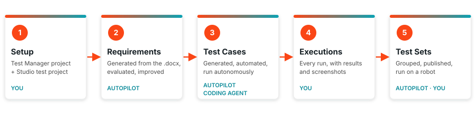

UiPath 合作伙伴成功 · 工作坊
🧪 UiPath 智能体测试与编码智能体¶
借助 Autopilot for Testers、Autopilot for Developers 和编码智能体，完成 UiPath 测试的规划、自动化、执行与报告——从一份测试用例设计文档出发，直到在 Test Cloud 中完成一次测试执行。
培训环境
请访问 https://staging.uipath.com/partnersuccess，使用租户 MadalinaTest 登录。

🎯 你将构建什么¶
本工作坊将向你展示 AI 智能体如何在 UiPath Test Cloud 中替你完成工作，以及哪些地方仍需要测试人员拍板。
- 🤖 Autopilot 在产品内部工作。在 Studio 中，它创建需求、测试用例和测试集；在 Test Manager 中，它评估需求、生成测试用例，并自主运行测试用例。
- 💻 Codex 或 Claude Code 这样的编码智能体在你的终端里工作。借助
uipCLI（命令行）和 UiPath skills（UiPath 技能），它能在你的 Studio 项目中实现测试用例的自动化，并运行测试集。 - 🏦 你将从 UiBank 演示应用的一份真实设计文档开始。
🗺️ 课程安排¶
课程从 9:00 持续到 17:00，约 8 小时，中间有两次休息和午餐。完成下面两个部分后，最后是 SAP 测试、问答和反馈环节。请在课程开始前完成环境准备。
-
1. 简介 + 理论知识
Test Cloud、Test Manager、Autopilot for Testers、Autopilot for Developers 和编码智能体：它们各自做什么，以及什么时候该用哪一个。
-
2. 动手实践
共五个部分，每部分各占一个标签页，从一个空项目一路做到执行完成的测试集。议程页面会一步步展示课程如何进行。
动手实践的各个部分¶
-
测试准备
场景介绍、设计文档，以及课堂上的环境准备：你的 Test Manager 项目，以及在 Studio 中新建并与之关联的测试自动化项目。
-
需求
Studio 中的 Autopilot 根据设计文档创建需求，Test Manager 中的 Autopilot 对其进行评估。
-
测试用例
由 Test Manager 中的 Autopilot 生成。你先手动完成 Login 测试用例的自动化，接下来的测试用例交给 Studio 中的 Autopilot 或编码智能体来自动化，最后由 Autopilot 自主运行其中一个。
-
执行
每一次运行——无论是手动、自动化还是自主执行——连同其结果和截图。
-
测试集
Autopilot 将你的测试用例分组，你来运行它们并解读结果。
-
开始之前
环境准备页面：所需工具、UiPath skills、登录方式，以及你的 UiBank 测试用户。
每个部分都附有你要用到的提示词。
🔑 核心概念¶
编码智能体
一种 AI 助手（例如 Claude Code），能根据你的指令，使用 uip CLI 和 UiPath skills 构建并运行 UiPath 组件。
uip CLI
编码智能体与 UiPath 平台通信所用的命令行界面，涵盖 Test Manager（uip tm）和 Studio 项目（uip rpa）。
UiPath skills
精心整理的指令包，教会编码智能体如何正确地使用 UiPath。本工作坊使用 uipath-test、uipath-rpa 和 uipath-platform。
Test Manager
Test Cloud 的中枢，集中管理需求、测试用例、测试集、执行和结果。
Autopilot for Testers
UiPath 内置于 Studio 和 Test Manager 中的测试智能体。它们能生成并评估需求、生成测试用例和测试集、自主运行测试用例，并解释测试结果。
Autopilot for Developers
Studio 中用于构建和修复自动化的 Autopilot：它会根据工作流的上下文生成并修复表达式。